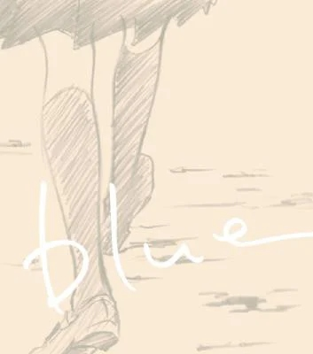
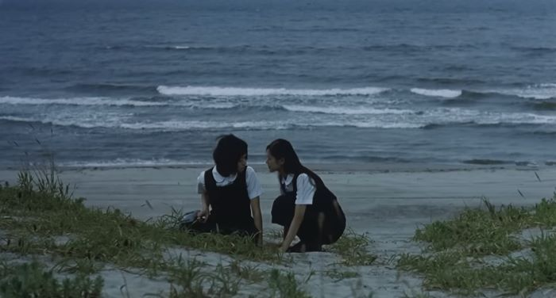
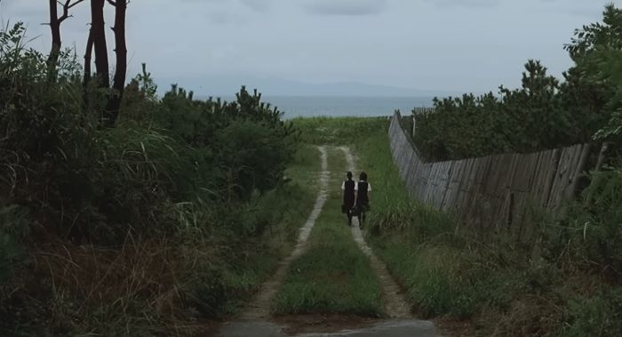

blue (2002) thoughts

 I WILL READ IT EVENTUALLY THO! and hopefully soon.from what ive seen in screenshots, the art style
I WILL READ IT EVENTUALLY THO! and hopefully soon.from what ive seen in screenshots, the art style this movie is very quiet i would say. like SURE, theres dialogue here and there but theres a lot of quiet moments. moments where we are just staring at the waves as they crash with the surface. moments where we are just watching kayako and endo just being there. in silence. and their silence can just say so much sometimes. and there's this beautiful beach they go to and its just quiet between the 2 girls except for the sounds of the waves. i really enjoyed those quiet moments. because you just get to focus on the characters and see how they are reacting and it just feels so intimate. and real.
 i also listened to the ost composed by otome yoshihide after watching the movie and it's honestly very very nice. quite honestly while watching the movie i kinda didnt really hear the full ost. i do remember this clarinet (i think its a clarinet) that would begin playing in scenes where it was just the 2 of them alone which i think is pretty cool. the clarinet in the song included in the ost album sound very silly at times cus its paired up with other instruments. like childish even. which now that i think about it does fit nicely into the whole theme.
my fav song from the soundtrack would have to be the sea. it has a WHOOPING track time of (almost) 17 minutes. but i really think its the most beautiful song here. it plays at the very end of the movie as well which ends on a scene where we are just looking and hearing the waves and i love how they implemented those wave sounds in the song. but anyway i just love the dreamy shoegazy guitar that it has.
overall despite not hearing a lot of the soundtrack in the film, its definitely compliments it very well. with its silly clarinet and yet somber sound.
to close my thoughts on this movie: this was a very beautiful experience to me. i loved the way it looked, it sounded, and how it made me feel. there were times in the movie where i laughed and smiled at kayako and endo. and there were also times when it just felt like my chest was empty as i looked at the same frame for a minute or two wondering and thinking about the movie and other things. while i did find it a bit slow at times, its not really without meaning. it is meant to be slow so you can really immerse yourself into it, and it lets you stay there for a bit as well. and while it is a very beautiful movie, its also a very sad one. oh but to be a high school girl yearning while also unsure about their future. shit is rough!!! and it gets it. i get it.
written with love by des, 25.mar.23